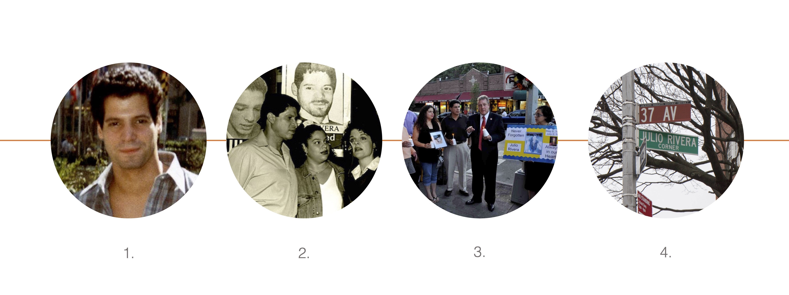

The Astoria neighborhood in Queens was renamed in 1840 to honor John Jacob Astor, a millionaire businessman whose Manhattan mansion could be seen across the East River. Founders of this new NY area wanted to get Mr. Astor to finance their project. Astor gave them $500 and never set foot in "his Astoria". Currently, the renaming of areas, streets, monuments and buildings acquires a community impact component. The honorary names belong to people who represent a valuable memory in the life of that neighborhood.
In a previous article we found out that from the 1,138 entries that mapping project Queens Name Explorer has to date, only 24 are of Hispanic/Latino heritage. The Bestneigborhood data visualization platform places Queens at 98 out of 100 on a diversity scale, and places the population of Hispanic origin at 28%, above white (25%), Asian (25%) and black origin. (17%). Thus, the results shown by the project, do not seem to correspond to this plurality, and specifically, to the historically high percentage of the Hispanic community.
The sign at the corner of 37th Avenue and 78th Street in Jackson Heights is one of the honorary names from the list. It commemorates the figure of Julio Rivera, a Puerto Rican and gay man brutally murdered in 1990 by three skinheads in a nearby schoolyard. Rivera's murder spurred the LGBT mobilization in Queens. It was also the first gay hate crime to be dealt in court in the state of New York.
1: Julio Rivera at Rockefeller Center, 1980s | 2: Ted Rivera, Julio's brother, with his daughter and his wife Peg in a rally after Julio's muder. | 3. Friends and family together with congressman Daniel Dromm reunite at the site to conmemorate. | 4: Julio Rivera Corner at Jackson Height, Queens
In this case it is important to know what the process of renaming these spaces is like. Joshua Jelly-Schapiro, professor at NYU and author of “Names of New York”, tells how after the unification of all the farmlands that are now Queens, many spaces acquired the names of the construction companies that restructured the spaces. For example, Rego Park (1920), whose name comes from the “Real Good Construction Company”. Joshua also mentions in his book that reflecting on place names requires considering issues not just of origins, but of power. It means asking who has the power to name and why.
This power dynamic has changed, everything starts from within communities. “We are the ones who have to raise awareness. The honorary appointment process is driven by the people who contributed and contribute tremendously to their community”, says Jelly-Schapiro. Now we, as citizens, can rename or co-name a space. The process is as easy as filing a petition in our community district.
Places with honorary Latino names include: Carlos Lillo Way (Astoria), Army Staff Sgt. Alex Jimenez Way (Corona), Francisco Munoz Way (Corona), Genesis Regalado Way (Corona), Sgt. Jose Gomez Place (Corona), Guillermo Vasquez Corner (Elmhurst), Lorena Borjas Way (Elmhurst), Captain Mario Fajardo Park (Flushing), Rabbi Dr. Asher Murciano Way (Forest Hill), Luis Alvarez Way (Hunters Point), Edgar Garzon Corner (Jackson Heights), Julio Rivera Corner (Jackson Heights) Laura Almeida Egas Corner (Jackson Heights), State Senator José R. Peralta Way (Jackson Heights), Nicolas A. Nowillo Place (Long Island City), E.S.U. Police Officer Santos "Papo" Valentin, Jr. Way (Richmond Hill), Felix Cuervo Corner (Richmond Hill), Police Officer Ramon Suarez Avenue (Ridgewood), Barbara Guzzardo Street (Ridgewood), Pfc. Hernando Rios Place (Woodside), Pamela Mascaro Corner (area not identified), Daniel Sanchez Way (area not identified), Monti Castañeda Corner (area not identified), Manuel de Dios Unanue Triangle (area not identified).
Queens Name Explorer relies on community power and knowledge to educate in collective history. Natalie Mildbrot, leader of the Queens Name Explorer initiative, encourages people to participate: “This is a call for the public to help verify and add stories. We want it to serve as a resource, there is no closing date, it is a living project”. The Queens Name Explorer repository can be accessed and edited directly from its website.